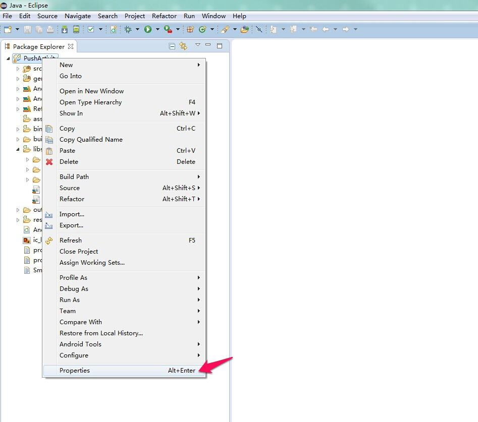
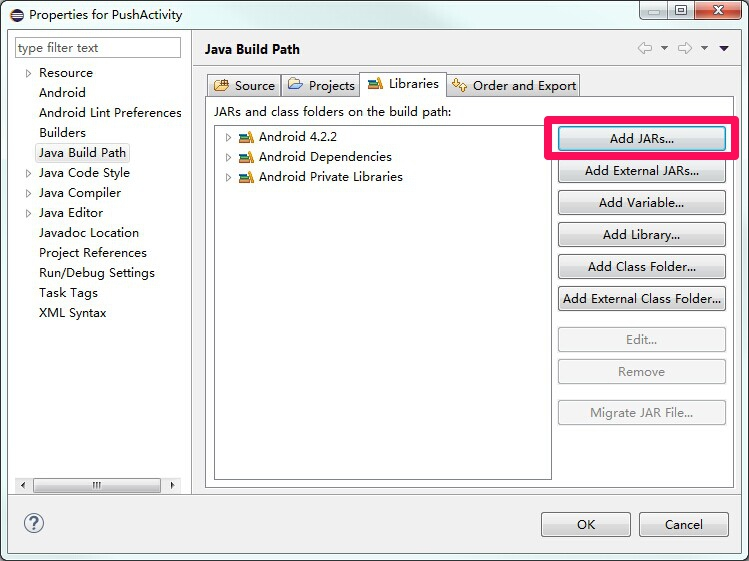
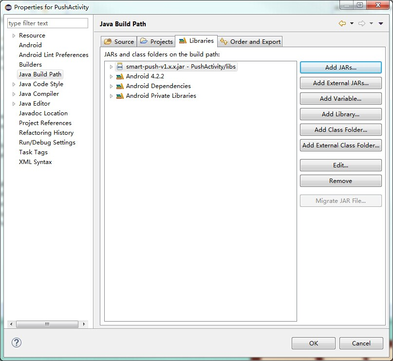
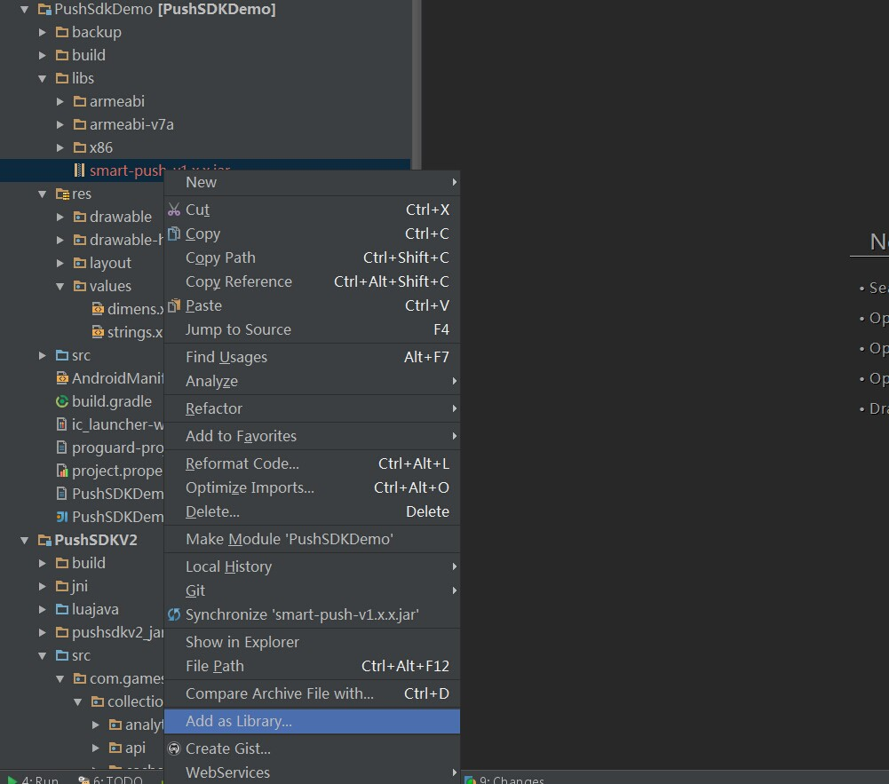
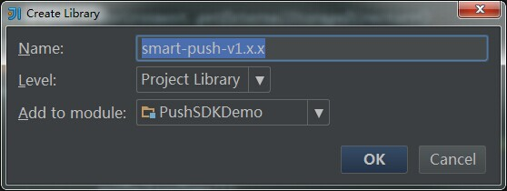

SmartPush SDK 说明文档
版本：V1.2.6
目录
-
4.1 IMsgReceiver
-
5.1 关于推送服务
1、产品说明
1.1 功能
开发者能够主动、及时地向玩家发送通知或消息。
可接收通知与自定义消息，向 App 传递相关信息。
1.2 特点
数据挖掘，实时或离线的场景分析，在适当的时候以适当的方式推送到玩家。
通过离线保障，不单纯依赖TCP长连接，将送达率提高到99.9%以上，降低客户端25%电力消耗。
1.3 SDK 包内容
示例程序工程：SmartPushExample
- SmartPushExample/src下: 示例代码
工程依赖包：smart-push-v1.x.x.jar
示例程序安装包：SmartPushExample.apk
说明文档：SmartPush SDK说明文档.pdf
1.4 Android SDK版本
- 目前SDK只支持Android 2.2或以上版本的手机系统。
2、开始集成SDK
2.1 导入包
- 拷贝 smart-push-v1.x.x.jar 包到主工程的libs下；
- Eclipse 下导入依赖包
注意：使用 Eclipse ADT 17 以上版本的开发者，其可自动引用jar包。使用 Eclipse ADT 17 以下版本开发者使用老方式添加工程引用：右键工程根目录 > Properties > Java Build Path > Libraries，然后点击Add External JARs... 选择指向jar包的路径(主项目的libs目录下)，点击OK，流程如下：



- IntelliJ IDEA 下导入包
工程libs目录 > 右键 smart-push-v1.x.x.jar > Add as Library > 选择Project Library > 加为项目依赖：


2.2 资源配置
在主工程 AndroidManifest.xml 的 manifest 标签下添加：
<!-- 必需： 权限配置 --> <uses-permission android:name="android.permission.INTERNET" /> <uses-permission android:name="android.permission.BATTERY_STATS" /> <uses-permission android:name="android.permission.ACCESS_WIFI_STATE" /> <uses-permission android:name="android.permission.ACCESS_NETWORK_STATE" /> <uses-permission android:name="android.permission.CHANGE_NETWORK_STATE" /> <uses-permission android:name="android.permission.CHANGE_WIFI_STATE" /> <uses-permission android:name="android.permission.VIBRATE" /> <uses-permission android:name="android.permission.WRITE_EXTERNAL_STORAGE" /> <uses-permission android:name="android.permission.BROADCAST_STICKY" /> <uses-permission android:name="android.permission.READ_PHONE_STATE" /> <uses-permission android:name="android.permission.SYSTEM_ALERT_WINDOW" /> <uses-permission android:name="android.permission.RECEIVE_BOOT_COMPLETED" /> <uses-permission android:name="android.permission.WAKE_LOCK" />
在主工程 AndroidManifest.xml 的 application 标签下添加：
<!-- 必需： 应用ID --> <meta-data android:name="NGDS_APPID" android:value="8" /> <!--必需： 应用KEY--> <meta-data android:name="NGDS_APPKEY" android:value="sVDIlIiDUm7tWPYWhi6kfNbrqui3ez44" /> <!--必需： 渠道号，默认14 --> <meta-data android:name="NGDS_CHANNEL" android:value="14" /> <!-- 必需： 推送页面配置 --> <activity android:name="com.gameservice.sdk.push.ui.SmartPushActivity" /> <!-- 必需： push 服务配置 --> <service android:name="com.gameservice.sdk.push.api.SmartPushService" android:process=":remote" /> <!-- 必需： push 消息接收配置 --> <receiver android:name="com.gameservice.sdk.push.api.SmartPushReceiver" android:enabled="true" android:exported="false" android:priority="90000" android:process=":remote"> <intent-filter> <action android:name="android.intent.action.PACKAGE_ADDED" /> <action android:name="android.intent.action.PACKAGE_CHANGED" /> <action android:name="android.intent.action.PACKAGE_DATA_CLEARED" /> <action android:name="android.intent.action.PACKAGE_INSTALL" /> <action android:name="android.intent.action.PACKAGE_REMOVED" /> <action android:name="android.intent.action.PACKAGE_REPLACED" /> <action android:name="android.intent.action.PACKAGE_RESTARTED" /> <action android:name="android.intent.action.USER_PRESENT" /> <action android:name="android.net.conn.CONNECTIVITY_CHANGE" /> <action android:name="android.intent.action.BOOT_COMPLETED" /> <action android:name="cn.ngds.android.intent.alarm" /> </intent-filter> </receiver>
- meta-data 标签配置说明：
- NGDS_APPID（应用ID）的value值配置成GameService 开发网站里真实分配到的AppId。
- NGDS_APPKEY（应用KEY）的value值配置成GameService 开发网站里真实分配到的AppKey。
- NGDS_CHANNEL（渠道号）的value值默认配置成14，有发渠道包的请填具体的渠道号。
2.3 添加代码
2.3.1 添加推送服务代码
在Activity或者Application子类中添加代码：
SmartPush.registerReceiver(new MessageReceiver()); SmartPush.registerService(this);说明：MessageReceiver类为IMsgReceiver的实现类，要开启服务必先实现一个此接口并注册，并重写onMessage方法处理接收到的消息(可参考demo)。
private class MessageReceiver implements IMsgReceiver { @Override public void onMessage(String message) { // 处理透传消息 message是Json字符串，如"{"ID":"id1", "NAME":"http:\/\/www.baidu.com"}" android.util.Log.i("TGX", "message:" + message); } @Override public void onDebug(String debugInfo) { // SDK发出的debug信息，可不处理 android.util.Log.i("TGX", "message:" + debugInfo); } @Override public void onDeviceToken() { // 玩家id与设备绑定,“0917”为玩家id SmartPush.bindDevice(PushActivity.this, "0917"); } }
2.3.2 添加信息采集服务代码
在Activity的onResume和onPause方法中作如下调用：
@Override protected void onPause() { SmartPush.onActivityPause(this); super.onPause(); } @Override protected void onResume() { SmartPush.onActivityResume(this); super.onResume(); }说明：添加以上代码才能正确获取玩家行为数据。
2.3.3 添加错误上报功能
Application的子类中进行如下调用：
public class BaseApp extends Application { private Thread.UncaughtExceptionHandler mDefaultUncaughtExceptionHandler; @Override public void onCreate() { super.onCreate(); initErrorHandler(); } private void initErrorHandler() { mDefaultUncaughtExceptionHandler = Thread.getDefaultUncaughtExceptionHandler(); Thread.setDefaultUncaughtExceptionHandler( new NGDSCrashHandler(this, mDefaultUncaughtExceptionHandler)); } }AndroidManifest.xml 的 application 标签添加
<application android:name=".BaseApp" ......说明：帮助我们收集错误信息以反馈更好的体验，如若不添加以上代码，出现问题我们将收不到相应信息。
2.3.4 设置Debug模式
Application的子类onCreate()方法中进行如下调用，以此来设置Debug模式。
@Override public void onCreate() { super.onCreate(); SmartPush.setDebugMode(true); }说明：若设置为Debug模式，SDK会记录程序信息并在logcat中打印调试log；若设置为非Debug模式，SDK不会做这些操作(默认为debug模式)。
2.4 测试确认
请确认 AndroidManifest.xml 中的 NGDS_APPKEY、NGDS_APPID、NGDS_CHANNEL的value值是否正常填写。
请确认主项目包名是否与GameService 开发网站里相应的App一致。
smart-push-v1.x.x.jar 包是否添加为依赖。
2.4.1 测试推送通知和消息
- 请参照“新游智能推送平台操作指南”
3、推送 API 介绍
注册启动push服务
- 方法： SmartPush.registerService (Context context)
- 功能： 注册启动push服务
- 参数： context 当前上下文
注销消息接收者
- 方法： SmartPush.unRegisterReceiver()
- 功能： 为App注销消息接收回调接口
- 参数： 无
注册消息接收者
- 方法： SmartPush.registerReceiver(IMsgReceiver receiver)
- 功能： 为App注册消息接收回调接口
- 参数： receiver消息处理接口类
玩家绑定设备接口
- 方法： SmartPush.bindDevice(Context context, String playerId)
- 功能： 为App注册消息接收回调接口
- 参数：
- context 上下文环境
- playerId 玩家id
- context 上下文环境
设置Debug模式
- 方法： SmartPush.setDebugMode(boolean isDebugable)
- 功能： 用于设置是否处于DebugMode
- 参数： isDebugable 是否设为Debug状态布尔值（true为Debug状态）
记录玩家离开当前页面行为
- 方法： SmartPush.onActivityPause(Context context)
- 功能： 玩家离开当前页面行为记录
- 参数： context 当前上下文
记录玩家返回当前页面行为
- 方法： SmartPush.onActivityResume(Context context)
- 功能： 玩家返回当前页面行为记录
- 参数： context 当前上下文
玩家登录记录
- 方法： SmartPush.recordLogin(Context context, String playerId)
- 功能： 玩家登录记录
- 参数：
- context 当前上下文
- playerId 玩家id
- context 当前上下文
玩家登出记录
- 方法： SmartPush.recordLogout(Context context)
- 功能： 玩家登出记录
- 参数： context 当前上下文
玩家支付记录
- 方法： SmartPush.recordPay(Context context, String serverId, String playerId, float amount, String paymentChanel, String currency, int coinAmount, String orderId, int level)
- 功能： 玩家支付行为记录
- 参数：
- context 当前上下文
- serverId 服务器id
- playerId 玩家id
- amount 充值金额
- paymentChanel 支付渠道
- currency 金额币种
- coinAmount 充值游戏币个数
- orderId 订单号
- level 玩家等级
- context 当前上下文
注册玩家统计
- 方法： SmartPush.recordRegister(Context context, String serverId , String playerId)
- 功能： 注册玩家统计
- 参数：
- context 当前上下文
- serverId 服务器id
- playerId 玩家id
记录玩家开始游戏的时间
- 方法： SmartPush.recordStartTime(Context context, String serverId, String playerId, int playerLevel)
- 功能： 玩家开始游戏时间的记录
- 参数：
- context 当前上下文
- serverId 服务器id
- playerId 玩家id
- playerLevel 玩家等级
记录玩家离开游戏的时间
- 方法： SmartPush.recordEndTime(Context context, String serverId, String playerId, int playerLevel)
- 功能： 玩家离开游戏时间的记录
- 参数：
- context 当前上下文
- serverId 服务器id
- playerId 玩家id
- playerLevel 玩家等级
记录玩家进入关卡的时间
- 方法： SmartPush.recordStartTime_Mission(Context context, String serverId, String playerId, int missionId)
- 功能： 玩家进入关卡时间的记录
- 参数：
- context 当前上下文
- serverId 服务器id
- playerId 玩家id
- missionId 关卡id
记录玩家离开关卡的时间
- 方法： SmartPush.recordEndTime_Mission(Context context, String serverId, String playerId, int missionId)
- 功能： 玩家离开关卡时间的记录
- 参数：
- context 当前上下文
- serverId 服务器id
- playerId 玩家id
- missionId 关卡id
玩家虚拟消费记录
- 方法： SmartPush.recordConsumption(Context context, String serverId, String playerId, int itemId, int itemAmount, int coinAmount)
- 功能： 玩家消费行为记录
- 参数：
- context 当前上下文
- serverId 服务器id
- playerId 玩家id
- itemId 消费商品id
- itemAmount 消费商品数量
- coinAmount 消费虚拟币数量
玩家剩余金币记录
- 方法： SmartPush.recordCoinAmount(Context context, String serverId, String playerId, int coinAmount)
- 功能： 玩家剩余金币记录
- 参数：
- context 当前上下文
- serverId 服务器id
- playerId 玩家id
- coinAmount 消费虚拟币数量
4、相关类介绍
4.1 IMsgReceiver（消息接收接口）
| 分类 | 功能 | 方法 |
|---|---|---|
| 透传消息接口 | 回调透传消息 | onMessage |
| 调试消息接口 | 回调 debug 消息 | onDebug |
| deviceToken信息接口 | 回调 deviceToken | onDeviceToken |
接收到的push消息
- 方法： public void onMessage(String message)
- 功能： 接受到的透传消息处理
- 参数： message 为Json字符串，如"{"ID":"id1", "NAME":"http:\/\/www.baidu.com"}"
接收到的debug消息
- 方法： public void onDebug(String debugInfo)
- 功能： 接收到的debug信息回调，用于debug使用
- 参数： debugInfo 为debug内容信息
接收分配到的deviceToken信息
- 方法： public void onDeviceToken()
- 功能： 回调时玩家id绑定设备
- 参数： 无
5、常见问题
5.1 关于推送服务
- 推送服务包括：
- 推送通知：通知以状态栏Notification的形式展现，无需开发者处理。
- 推送消息：处理消息需开发者在 IMsgReceiver 实现类的onMessage(String message)方法内自定义(参考demo)。